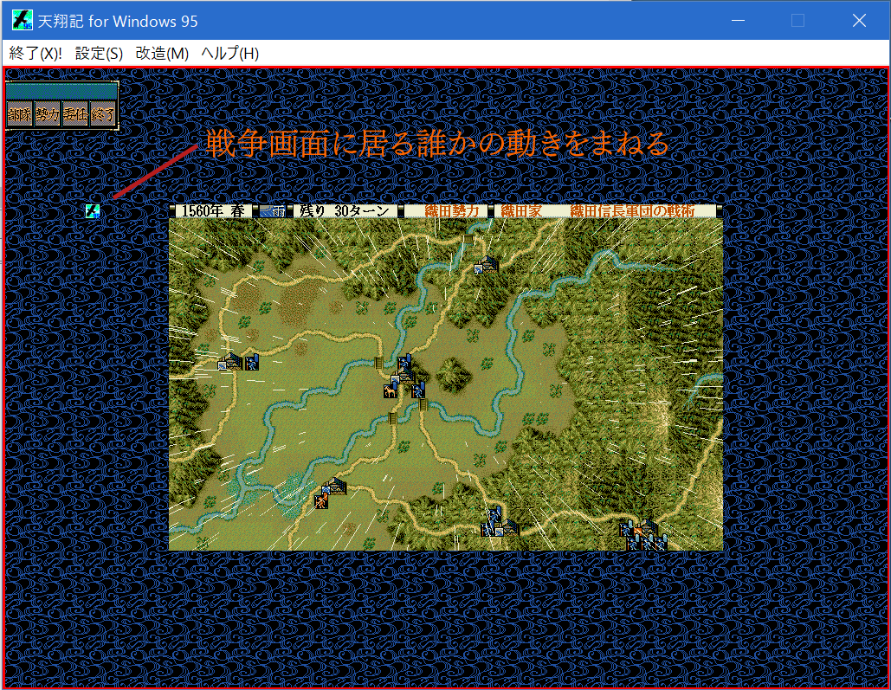

ここは、天翔記の画面に上に何かを描画する例を示します。
様々なコンポーネントが描画可能ですが、ここでは画像を描画するものとします。
一種の本体ゲームに寄生するウィンドウとなります。
ここでは、例として、「戦争中の誰かのユニットの動きを追従する画像」
というものを実装します。

天翔記ディレクトリに16x16ピクセルの画像を「icon16.png」というファイル名で用意してください。
応用編なため、内容の詳細について触れることはしません。
コメント等を参考に、ご自身で中身をチェックしてください。
#include "カスタム駆動関数.h"
#include "TS95OverLayerEffects.h"
using namespace System;
カスタム::カスタム() {
// 各メソッドの具体的な解説は「http://天翔記.jp/?page=nobu_mod_the_snmod_methodref_index」にて記述されています。
}
void カスタム::On_起動時() {
TS95OverLayerForm::IsOverLayerFormValid = false;
// 本体に寄生するウィンドウを
if (TS95OverLayerForm::meForm == nullptr || TS95OverLayerForm::meForm->IsDisposed) {
TS95OverLayerForm::meForm = gcnew TS95OverLayerForm();
TS95OverLayerForm::meForm->Show();
}
}
void カスタム::On_終了時() {
TS95OverLayerForm::IsOverLayerFormValid = false;
if (TS95OverLayerForm::meForm) {
TS95OverLayerForm::meForm->Close();
}
}
void カスタム::On_ウィンドウ解像度切替時() {
TS95OverLayerForm::IsOverLayerFormValid = true;
}
#pragma once
#include <Windows.h>
using namespace System;
using namespace System::Drawing;
using namespace System::Windows::Forms;
using namespace System::IO;
ref class TS95OverLayerForm : Form
{
public:
TS95OverLayerForm();
private:
HWND hWnd; // 天翔記のメインのウィンドウハンドルを取っておくためのもの。
HWND GetGameWindowHandle(); // ウィンドウハンドル取得
public:
static TS95OverLayerForm^ meForm; // 自分自身をグローバルに確保しておく。
static bool IsOverLayerFormValid; // 寄生を有効にする無効にするを外からスイッチングする。
private:
Timer ^form_tick_timer; // タイマーによる実行。厳密な処理ではこのようなことは許されない(天翔記とのズレやメモリブロックが生じる)
// ここではオーバーレイヤーによる描画を緩い目的で使用するものとしてこの方法を紹介する。
void TimerTick(Object ^o, EventArgs ^e);
private:
void TS95OverLayerForm_Shown(Object ^o, EventArgs ^e);
void ResizeAndRepositionSelf(HWND hWnd);
private:
Point onDrawingSize; // 何度も描画しないで済むようにするためのブロック
void DrawScopeSquare(); // 赤い線の描画。これはあくまでウィンドウがどのタイミングで寄生しているのかわかりやすくするためのテスト描画
private:
Image^ img; // イメージ。実際にはこのように１つだけポツンと表示する例はないだろうが…
PictureBox^ pb; // イメージはコンポーネントではないので、何らかのコンポーネント型に入れる必要がある。
void DrawMyImage();
protected:
// このフォームがクリックなどされた時にアクティブにならないようにする。あくまでもメインのゲームウィンドウに寄生する特殊なウィンドウのため。
virtual void WndProc(Message %m) override;
// このフォームが表示される時にアクティブにならないようにする。あくまでもメインのゲームウィンドウに寄生する特殊なウィンドウのため。
property bool ShowWithoutActivation
{
virtual bool get() override { return true; }
}
};
#include "ゲームデータ構造.h"
#include "TS95OverLayerEffects.h"
TS95OverLayerForm::TS95OverLayerForm()
{
this->AutoScaleMode = System::Windows::Forms::AutoScaleMode::Font;
this->Text = "TS95OverrideLayerTransparentForm"; // 名前は自由に付けてよい。
this->BackColor = Color::Pink; // 一番使わないピンクで塗っておいて
this->TransparencyKey = Color::Pink; // ピンクは透明ということにする。
this->FormBorderStyle = ::FormBorderStyle::None;
this->TopMost = true;
this->ShowInTaskbar = false;
// 表示された時のイベントハンドラ
this->Shown += gcnew EventHandler(this, &TS95OverLayerForm::TS95OverLayerForm_Shown);
this->form_tick_timer = gcnew Timer();
form_tick_timer->Interval = 33;
form_tick_timer->Enabled = true;
form_tick_timer->Tick += gcnew System::EventHandler(this, &TS95OverLayerForm::TimerTick);
form_tick_timer->Start();
}
HWND TS95OverLayerForm::GetGameWindowHandle() {
return FindWindow("Tenshouki95", NULL);
}
void TS95OverLayerForm::TimerTick(Object ^o, EventArgs ^e)
{
if (!IsOverLayerFormValid) {
return;
}
if (!hWnd) {
hWnd = GetGameWindowHandle();
}
if (!hWnd) {
this->Close();
}
if (GetActiveWindow() == hWnd) {
if (!this->Visible) {
this->Show();
SetActiveWindow(hWnd);
}
ResizeAndRepositionSelf(hWnd);
DrawScopeSquare();
DrawMyImage();
}
else {
this->Hide();
}
}
void TS95OverLayerForm::ResizeAndRepositionSelf(HWND hWnd)
{
try {
RECT rectClient;
::GetClientRect(hWnd, &rectClient);
POINT pt;
pt.x = 0;
pt.y = 0;
ClientToScreen(hWnd, &pt);
this->Left = pt.x;
this->Top = pt.y;
this->Width = rectClient.right;
this->Height = rectClient.bottom;
} catch (...) {}
}
void TS95OverLayerForm::TS95OverLayerForm_Shown(Object ^o, EventArgs ^e)
{
}
void TS95OverLayerForm::DrawScopeSquare()
{
try {
if (onDrawingSize.X == this->Width && onDrawingSize.Y == this->Height) {
return;
}
onDrawingSize.X = this->Width;
onDrawingSize.Y = this->Height;
デバッグ出力 << "描画" << endl;
//描画先とするImageオブジェクトを作成する
Bitmap ^canvas = gcnew Bitmap(this->Width, this->Height);
//ImageオブジェクトのGraphicsオブジェクトを作成する
Graphics ^g = Graphics::FromImage(canvas);
//Penオブジェクトの作成(幅1の黒色)
Pen ^p = gcnew Pen(Color::Red, 5);
g->DrawRectangle(p, 0, 0, this->Width, this->Height);
//リソースを解放する
delete p;
delete g;
// 背景に表示する。背景が透明だと、マウスでクリックした際は下にあるウィンドウが反応するというのはウィンドウズの仕様。
// よって、この仕様を逆用するのが楽だと思われる。
this->BackgroundImage = canvas;
}
catch (...) {}
}
void TS95OverLayerForm::WndProc(Message %m)
{
switch (m.Msg)
{
case WM_MOUSEACTIVATE:
m.Result = safe_cast<IntPtr>(WM_NCACTIVATE);
return;
}
System::Windows::Forms::Form::WndProc(m);
}
// 実質的には、ここが天翔記のゲーム内との接点
void TS95OverLayerForm::DrawMyImage() {
try {
if (img == nullptr) {
img = Image::FromFile("icon16.png");
pb = gcnew PictureBox();
pb->Image = img;
pb->Width = img->Width;
pb->Height = img->Height;
this->Controls->Add(pb);
}
デバッグ出力 << "描画" << endl;
// 今出陣中の武将のリストを出す。
番号リスト型 list = Get_出陣中の武将番号リスト【配列用】《表示中マップ》();
// １人以上出陣していれば、
if (list.size() > 0) {
// その人の武将番号を取得
int iBushouID = list[0]; // 最初の人だけ例とする。
// その人のマップでの位置を取得
ヘックス位置型 pos;
if (Is_野戦中()) {
pos = Get_武将の野戦ヘックス位置(iBushouID);
}
else if (Is_攻城戦中() ) {
pos = Get_武将の攻城戦ヘックス位置(iBushouID);
}
else {
pos = ヘックス位置型(0, 0);
}
// その位置に16かけたものをそのまま画像の位置にする。
// その位置に16かけたものをそのまま画像の位置にする。
double x = pos.Ｘ * 16.0;
double y = pos.Ｙ * 16.0;
pb->Left = round《整数化》(x);
pb->Top = round《整数化》(y);
}
} catch (...) {}
}